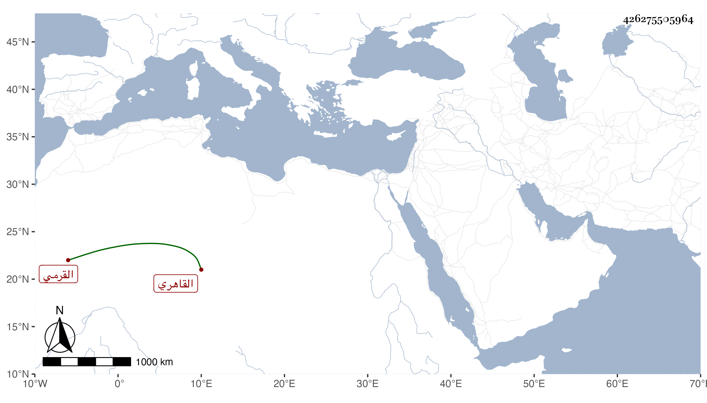

0902Sakhawi.DawLamic.ITO20230111-ara1.EIS1600.426275505964
Biography ID: 426275505964
إبراهيم بن قرمش القرمي الأصل القاهري تاجر المماليك كأبيه وأحد خواص الأشرف ممن أثرى ثم تضعضع بعد موته وذكر بخير وبروحشمة وإلى أبيه تنسب الأمراء القرمشية . مات في سنة ست وخمسين وقد زاد على الثمانين . أفاده الزين عبد الباسط بن الأمير خليل وكان زوجا لعمته .
